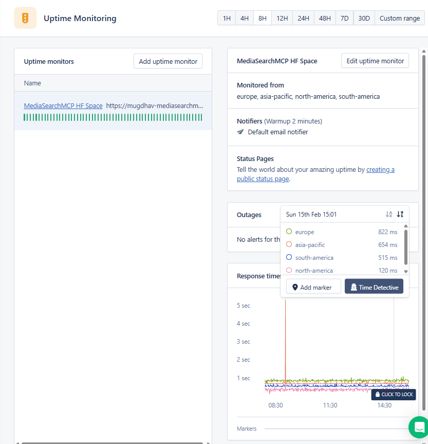
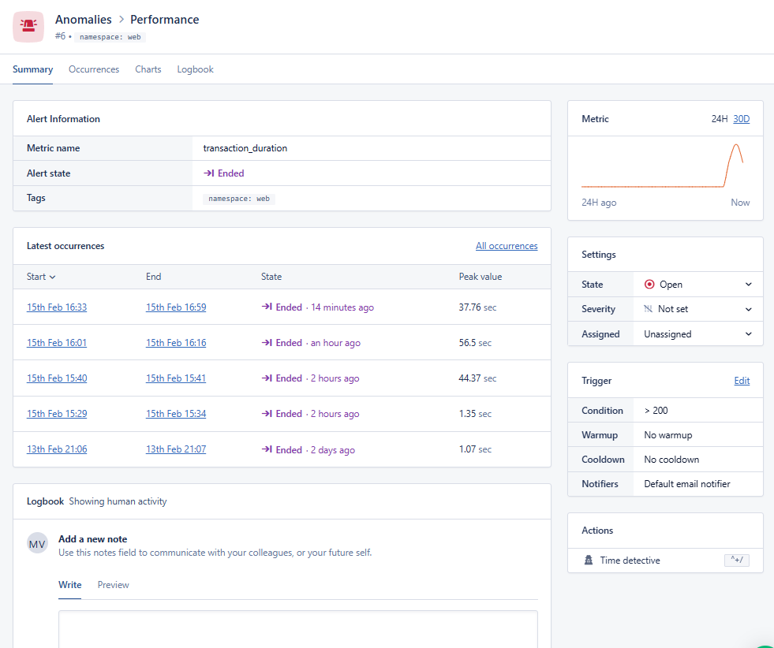
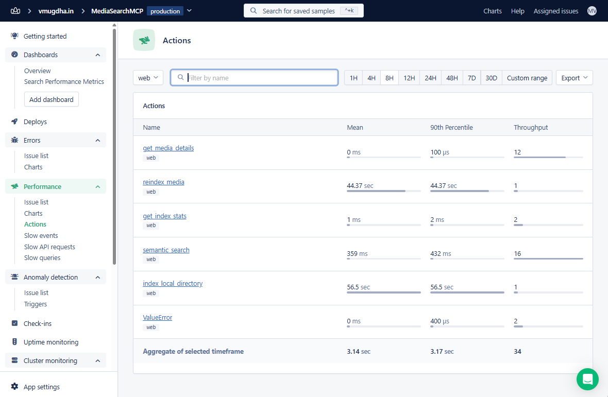
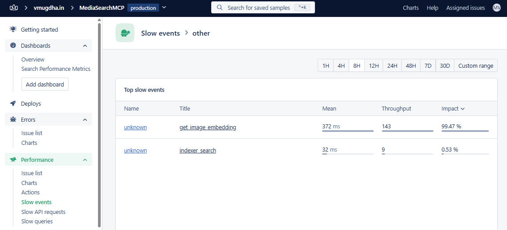
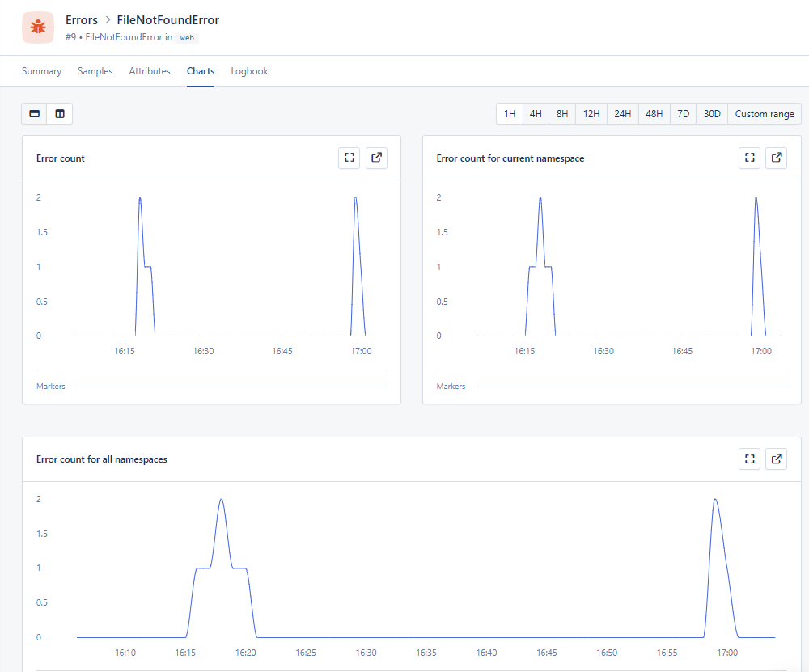

An important step in building an enterprise-grade app is ensuring it can scale with reasonable performance to meet the demands of large user bases. This means measuring response times, tracking errors, and understanding where bottlenecks occur. These requirements make observability — and consequently application performance monitoring (APM) — essential for an application's success. Which is why I decided to implement APM in my Local Media Search MCP server.
The Local Media Search MCP server uses SigLIP, a local vision-language model, to index and search photos and videos using natural language. Every search query involves encoding text into a vector with SigLIP, querying a FAISS index, and returning ranked results. Every indexing operation means loading images, extracting video frames, and computing embeddings for each file. These are CPU-intensive operations, especially on the free-tier Hugging Face Space where the server is deployed.
While the container logs of the Hugging Face Space provide detailed event-level output, the MCP server requires additional performance monitoring with structured metrics, historical trends, and alerting that plain logs don't offer. To meet this requirement, I integrated AppSignal with the Local Media Search MCP server.
This post walks through why I chose AppSignal, how I added instrumentation to the server, and what insights I'm now getting from the dashboard.
Why AppSignal?
When evaluating APM tools, I had specific requirements for this project:
Python + OpenTelemetry support - My server uses Gradio (built on Starlette/FastAPI), and I wanted tracing that understood async Python. AppSignal's Python SDK is built on OpenTelemetry, which meant I could use standard OpenTelemetry instrumentation libraries alongside AppSignal's helper functions.
Custom metrics without infrastructure overhead - AppSignal's set_gauge() and increment_counter() helpers let me track custom metrics with just a function call. No need to run a separate metrics server or additional services to deploy.
Error tracking with context - When SigLIP inference fails or a file becomes inaccessible, I needed the stack trace plus the context of what operation was running. AppSignal's send_error() captures both.
Anomaly detection and alerting - I wanted to know when search latency spikes above normal — not just see it in a graph later. AppSignal's trigger system lets me set thresholds and get notified.
Uptime monitoring included - Since the HF Space can go to sleep, I needed uptime checks. AppSignal includes this in the same dashboard, so I don't need yet another monitoring service.
The Instrumentation
The MCP server requires instrumentation — that is, adding code that gathers app performance data to send to AppSignal. This touched three files: requirements.txt, app.py, and ai_indexer.py.
Dependencies
# requirements.txt
appsignal
opentelemetry-instrumentation-starletteThe appsignal package includes all the Python helpers. The Starlette instrumentation auto-captures HTTP requests to Gradio's underlying FastAPI app.
Configuration
I chose inline configuration over the __appsignal__.py file approach (see why). On Hugging Face Spaces, auto-discovery of config files was unreliable, and inline configuration made debugging easier:
# app.py
from appsignal import Appsignal, set_category, send_error, set_gauge, increment_counter
from opentelemetry.instrumentation.starlette import StarletteInstrumentor
from opentelemetry import trace
from dotenv import load_dotenv
# Load .env BEFORE AppSignal initialization
load_dotenv()
appsignal_client = Appsignal(
active=True,
name="MediaSearchMCP",
push_api_key=os.getenv("APPSIGNAL_PUSH_API_KEY", ""),
environment=os.getenv("APPSIGNAL_APP_ENV", "development"),
enable_host_metrics=True,
)
appsignal_client.start()The enable_host_metrics=True flag tells AppSignal to collect CPU, memory, and disk usage from the container — useful for spotting when the free-tier Space is running out of resources. Note that load_dotenv() must run before Appsignal() is initialized (see why).
After creating the Gradio app, I instrument it:
# Apply Starlette instrumentation to Gradio's internal FastAPI app
StarletteInstrumentor().instrument_app(demo.app)For Hugging Face Spaces, I set two secrets in the Space settings:
APPSIGNAL_PUSH_API_KEY— the API key from AppSignalAPPSIGNAL_APP_ENV— set toproduction
Custom Spans for MCP Tools
Each MCP tool function gets its own OpenTelemetry span with relevant attributes. Here's the pattern I used for semantic_search:
tracer = trace.get_tracer(__name__)
async def semantic_search(query: str, media_type: str = "all", top_k: int = 5):
start_time = time.time()
increment_counter("semantic_search.calls", 1)
with tracer.start_as_current_span("semantic_search") as span:
set_category("mcp_tool.semantic_search")
span.set_attribute("search.query", query)
span.set_attribute("search.media_type", media_type)
span.set_attribute("search.top_k", top_k)
try:
results = indexer.search(query, top_k=top_k)
# Track result metrics
span.set_attribute("search.result_count", len(results))
set_gauge("semantic_search.result_count", len(results))
if results:
similarities = [r["similarity"] for r in results]
set_gauge("semantic_search.top_similarity", max(similarities))
set_gauge("semantic_search.avg_similarity", sum(similarities) / len(similarities))
else:
increment_counter("semantic_search.zero_results", 1)
duration_ms = (time.time() - start_time) * 1000
set_gauge("semantic_search.duration_ms", duration_ms)
return results
except Exception as e:
increment_counter("semantic_search.errors", 1)
send_error(e)
raiseThe set_category() call is AppSignal-specific — it groups spans in the dashboard so I can see all mcp_tool.* operations together.
I applied the same pattern to all four MCP tools:
| Span Name | Key Attributes |
|---|---|
semantic_search |
search.query, search.media_type, search.top_k, search.result_count |
get_media_details |
media.file_path, media.type |
reindex_media |
reindex.force, reindex.file_count |
get_index_stats |
stats.total_files, stats.images, stats.videos |
Custom Spans in the AI Indexer
The core AI operations in ai_indexer.py also got instrumented:
# ai_indexer.py
from opentelemetry import trace
from appsignal import send_error
tracer = trace.get_tracer(__name__)
def search(self, query: str, top_k: int = 5):
with tracer.start_as_current_span("indexer_search") as span:
span.set_attribute("search.query", query)
span.set_attribute("search.top_k", top_k)
try:
# Get text embedding using SigLIP
with tracer.start_as_current_span("get_image_embedding"):
# High-frequency operation, kept lightweight (no attributes)
query_embedding = self._encode_text(query)
# FAISS search
results = self._search_index(query_embedding, top_k)
span.set_attribute("search.result_count", len(results))
return results
except Exception as e:
send_error(e)
raiseThis creates nested traces. When a user performs a search, I can see the full call chain:
POST /api/predict (auto-instrumented by Starlette)
└── semantic_search (app.py)
└── indexer_search (ai_indexer.py)
└── get_image_embedding (ai_indexer.py)Error Reporting
Every except block now reports to AppSignal:
try:
self.model = SigLIPModel.from_pretrained(model_name)
except Exception as e:
send_error(e) # Reports to AppSignal with full stack trace
raiseI added send_error() calls to:
- Model loading failures
- Video frame extraction errors
- FAISS index save/load failures
- File access errors in media processing
- All MCP tool exception handlers
Custom Metrics Summary
Here's the full list of custom metrics the server now reports:
Gauges (point-in-time values):
semantic_search.duration_ms— end-to-end search latencysemantic_search.result_count— results returned per searchsemantic_search.top_similarity— highest similarity scoresemantic_search.avg_similarity— average similarity across resultsreindex.duration_ms— full reindex timereindex.file_count— files after reindexindex.total_files,index.images,index.videos— current index stats
Counters (cumulative events):
semantic_search.calls— total searchessemantic_search.zero_results— searches with no matchessemantic_search.errors— failed searchesreindex.calls,reindex.errors— reindex operationsget_index_stats.calls— stats queries
Configuring AppSignal Dashboard
With data flowing in, I configured the AppSignal side to make it actionable.
Custom Metrics Dashboard
To visualize the semantic_search.duration_ms gauge over time, I created a custom dashboard using AppSignal's Graph Builder:
The Graph Builder lets you configure:
- Chart title: "Semantic Search Duration"
- Metrics: Select the
semantic_search.duration_msgauge - Graph display: Line graph works best for time-series latency data
- Data format: Duration (displays values in milliseconds/seconds)
- NULL values: "Draw NULL as 0" or "Repeat last known value"
The chart preview on the right shows real-time data as per the configured graph. Once saved, the graph appears on the custom dashboard:

The "Search Performance Metrics" dashboard displays four key gauges tracking search performance over time: Semantic Search Duration (latency spikes up to 60ms), Semantic Search Similarity (result quality scores), Semantic Search Results (number of results returned per query), and Reindex Duration (time spent on reindex operations). The latency spikes around 17:00 correlate with cold starts after the HF Space wakes from sleep.
Uptime Monitoring
I added an uptime monitor for the HF Space URL with checks from multiple global regions:
The uptime monitor configuration includes:
- URL:
https://mugdhav-mediasearchmcp.hf.space/ - Monitored from: Europe, Asia-Pacific, North America, South America
- Warm-up: 2 minutes (to avoid alerting on single failed checks)
- Notifiers: Default email notifier
The response time graph shows latency from each region — North America at 120ms is fastest (closest to HF's infrastructure), while Europe sees 822ms. This helps identify if performance issues are region-specific or global.
Anomaly Detection Triggers
I set up a trigger for slow searches:
- Metric:
semantic_search.duration_ms - Condition: Goes above 5000
- Warm-up: 2 minutes (to avoid alerting on single slow requests)
This catches sustained performance degradation without alert fatigue from one-off spikes.
Here's what it looks like when anomalies are detected:
The Anomaly Detection view shows triggered alerts with their peak values. You can see several occurrences where transaction_duration exceeded the threshold — peak values of 56.5 seconds and 44.37 seconds correspond exactly to the index_local_directory and reindex_media operations I saw in the Actions view. The trigger configuration panel on the right shows the condition (> 200ms) and notifier settings. Each occurrence is tracked with start/end times, making it easy to correlate with specific user actions or scheduled tasks.
Notification Setup
In App settings → Notifications, I configured:
- Error alerts: "First after close" — notifies on new errors, not every occurrence
- Anomaly alerts: Enabled for the slow search trigger
What I'm Learning from the Dashboard
Here's where it gets interesting. The AppSignal dashboard revealed performance patterns I hadn't anticipated.
The Actions View
The Actions view shows all my instrumented operations with mean response times and throughput:
| Action | Mean | 90th Percentile | Throughput |
|---|---|---|---|
get_media_details |
0 ms | 100 µs | 12 |
get_index_stats |
1 ms | 2 ms | 2 |
semantic_search |
359 ms | 432 ms | 16 |
index_local_directory |
56.5 sec | 56.5 sec | 1 |
reindex_media |
44.37 sec | 44.37 sec | 1 |
Key insight: semantic_search averages 359ms with the 90th percentile at 432ms — a 20% variance that suggests some queries hit edge cases. The metadata operations (get_media_details, get_index_stats) are lightning fast at under 2ms, which is expected since they're just dictionary lookups.
The indexing operations (reindex_media at 44.37 seconds, index_local_directory at 56.5 seconds) are the heavy hitters. Now I have baselines to track optimization efforts.
The Slow Events View
The Slow Events view surfaces the specific operations consuming the most time:
| Event | Mean | Throughput | Impact |
|---|---|---|---|
get_image_embedding |
372 ms | 143 | 99.47% |
indexer_search |
32 ms | 9 | 0.53% |
This is the smoking gun. get_image_embedding accounts for 99.47% of slow event impact. It's called 143 times (once per indexed image during reindex) at 372ms each — that's where the 56-second index_local_directory time comes from.
The SigLIP text encoder (indexer_search at 32ms) is much faster and only contributes 0.53% of the impact despite being called 9 times.
Host Metrics

The Host Metrics view shows what's happening at the infrastructure level:
- Load average: Spikes up to 30+ during reindexing operations, indicating CPU contention
- CPU usage: Generally low (under 5%) but spikes to 60%+ during model inference
- Memory usage: Stable around 14.65 GB — the SigLIP model holds ~150MB in memory, and the rest is the HF Space's base allocation
The correlation is clear: load average spikes (13:30, 14:30) align with reindex operations. This confirms the bottleneck is CPU-bound model inference, not memory or I/O.
Error Tracking in Action
The error tracking I implemented with send_error() is now catching real issues. Here's a FileNotFoundError that occurred when a user requested details for a file that had been moved:
The error detail view shows exactly what the blog promised — context alongside the stack trace:
- Error message: "File not found: WhatsApp Image 2025-09-13 at 16.01.58_833321f0.jpg"
- Parameters: The
sourcefield shows it came fromget_media_details, andfile_pathshows which file was missing - Error trends: The chart on the right shows this error spiking recently
- Saved samples: Multiple occurrences are tracked, making it easy to see if this is a one-off or recurring issue
The error charts view shows the pattern over time:
Two distinct spikes are visible — one around 16:15-16:20 and another at 17:00. This pattern suggests the errors aren't random; they correlate with specific user sessions or test runs. Without this visibility, I'd be guessing at whether file access errors were increasing or just occasional glitches.
Actionable Insights
From this data, I can prioritize optimizations:
- Batch image embeddings. Instead of calling
get_image_embedding143 times individually, I should batch them. SigLIP supports batch inference, and reducing Python loop overhead could cut reindex time significantly. - Cache text embeddings. The
indexer_searchtime includes encoding the search query. For repeated queries, I could cache the text embedding. - Monitor similarity score trends. The
semantic_search.avg_similaritygauge will show if search quality degrades as the index grows.
Bug Fixes During Instrumentation
The process wasn't entirely smooth. Two issues came up:
BaseModelOutputWithPooling
Newer versions of the transformers library return a BaseModelOutputWithPooling object from get_image_features() instead of a raw tensor. This broke embedding normalization:
# Before (broke on newer transformers)
image_features = self.model.get_image_features(**inputs)
image_features = image_features / image_features.norm(dim=-1, keepdim=True)
# After (works with both old and new)
image_features = self.model.get_image_features(**inputs)
if not isinstance(image_features, torch.Tensor):
image_features = image_features.pooler_output
image_features = image_features / image_features.norm(dim=-1, keepdim=True)AppSignal would have caught this error in production with a full stack trace — which is exactly why I added error tracking before deploying.
Configuration Auto-Discovery
My initial setup used __appsignal__.py with the standard appsignal.start() pattern. AppSignal started but wasn't sending data. The issue: the active option defaults to false, and if auto-discovery silently fails, nothing gets reported.
The fix was inline configuration with explicit os.getenv() reads — no auto-discovery dependency.
Initialization Order
A subtle bug: load_dotenv() must run before Appsignal() is initialized. Otherwise, environment variables from .env aren't available for local development. Small detail, silent failure.
What's Next
With the baseline established, I'm planning to:
- Add a custom dashboard for search quality metrics (similarity scores over time)
- Set up anomaly detection on
index.total_filesto catch if the index silently loses data - Track model load time as a separate gauge to monitor cold starts on the HF Space
The server is live at mugdhav-mediasearchmcp.hf.space — and now I can actually see what's happening under the hood.
Built with AppSignal for Python and deployed on Hugging Face Spaces.